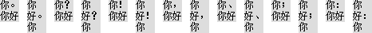
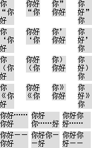
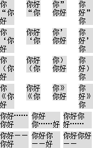
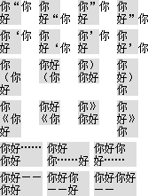

无
制作中文页面并使用标点符号时，不同浏览器对于中文标点的折行判定条件有差异。
由于不同浏览器对于中文标点的折行条件有差异，若在对段落文字进行排版布局时，过分依赖当前段落文字自动计算的尺寸可能会产生折行差异，最终可能导致文字布局存在少许差异。
| 所有浏览器 |
|---|
1. 中文标点书写规范
标点符号是辅助文字记录语言的符号，是书面语的有机组成部分，用来表示停顿、语气以及词语的性质和作用。
中文标点分为 "点号" 与 "标号" 两大类：
中文标点书写时在行内的位置
2. 各浏览器对中文标点自动折行的规则差异
分析如下代码：
<style> .c { float:left; } .d { width:24px; background:#DDD; font:12px 宋体; float:left; margin:5px
10px 0 0; display:inline; } </style> <h1>标号：</h1> <div style="width:640px;
overflow:hidden;"> <div class="c"> <div
class="d">你。你好</div> <div class="d">你好。你</div> </div>
<div class="c"> <div class="d">你？你好</div> <div
class="d">你好？你</div> </div> <div class="c"> <div
class="d">你！你好</div> <div class="d">你好！你</div> </div>
<div class="c"> <div class="d">你，你好</div> <div
class="d">你好，你</div> </div> <div class="c"> <div
class="d">你、你好</div> <div class="d">你好、你</div> </div>
<div class="c"> <div class="d">你；你好</div> <div
class="d">你好；你</div> </div> <div class="c"> <div
class="d">你：你好</div> <div class="d">你好：你</div> </div>
</div> <h1>标号：</h1> <div style="width:175px; overflow:hidden;">
<div class="c"> <div class="d">你 "你好</div> <div
class="d">你好 "你</div> </div> <div class="c"> <div
class="d">你" 你好</div> <div class="d">你好" 你</div>
</div> <div class="c"> <div class="d">你‘你好</div> <div
class="d">你好‘你</div> </div> <div class="c"> <div
class="d">你’你好</div> <div class="d">你好’你</div> </div>
<div class="c"> <div class="d">你（你好</div> <div
class="d">你好（你</div> </div> <div class="c"> <div
class="d">你）你好</div> <div class="d">你好）你</div> </div>
<div class="c"> <div class="d">你《你好</div> <div
class="d">你好《你</div> </div> <div class="c"> <div
class="d">你》你好</div> <div class="d">你好》你</div> </div>
<div class="c" style="width:190px;"> <div class="d"
style="width:48px; margin-right:5px;">你好……你好</div> <div class="d"
style="width:48px; margin-right:5px;">你好你……好</div> <div class="d"
style="width:48px;">你好你好……</div> </div> <div class="c"
style="width:190px;"> <div class="d" style="width:48px;
margin-right:5px;">你好——你好</div> <div class="d" style="width:48px;
margin-right:5px;">你好你——好</div> <div class="d"
style="width:48px;">你好你好——</div> </div> </div>
上面代码测试了一些常用的中文标点符号可能出现在行框一行的结尾或者开头时浏览器对其折行的处理情况。这段代码在不同浏览器中运行结果如下：
| 所有浏览器 |
|---|
|  |
可见，对于"标号"，所有浏览器的处理均相同，即标号可以出现在行的结尾，但不能出现在行的开头。
下面继续对点号进行测试，其结果如下：
| IE | Firefox | Safari Chrome Opera |
|---|---|---|
|  |  |  |
可见，对于"点号"：
【注】本文讨论的情况均为中文标点符号在连续的上下文之间的情况，不包含：
下面列表说明各浏览器对常用中文标点符号的折行条件：
| IE6 IE7 IE8 | Firefox | Chrome | Safari | Opera | ||
|---|---|---|---|---|---|---|
| 句号 | 。 | 行结尾 | 行结尾 | 行结尾 | 行结尾 | 行结尾 |
| 问号 | ？ | 行结尾 | 行结尾 | 行结尾 | 行结尾 | 行结尾 |
| 叹号 | ! | 行结尾 | 行结尾 | 行结尾 | 行结尾 | 行结尾 |
| 逗号 | ， | 行结尾 | 行结尾 | 行结尾 | 行结尾 | 行结尾 |
| 顿号 | 、 | 行结尾 | 行结尾 | 行结尾 | 行结尾 | 行结尾 |
| 分号 | ； | 行结尾 | 行结尾 | 行结尾 | 行结尾 | 行结尾 |
| 冒号 | ： | 行结尾 | 行结尾 | 行结尾 | 行结尾 | 行结尾 |
| 前双引号 | " | 行开头 | 行开头 | 禁止行开头与结尾 | 禁止行开头与结尾 | 禁止行开头与结尾 |
| 后双引号 | " | 行结尾 | 行结尾 | 禁止行开头与结尾 | 禁止行开头与结尾 | 禁止行开头与结尾 |
| 前单引号 | ‘ | 行开头 | 行开头 | 禁止行开头与结尾 | 禁止行开头与结尾 | 禁止行开头与结尾 |
| 后单引号 | ’ | 行结尾 | 行结尾 | 禁止行开头与结尾 | 禁止行开头与结尾 | 禁止行开头与结尾 |
| 左括号 | （ | 行开头 | 行开头 | 行开头 | 行开头 | 行开头 |
| 右括号 | ） | 行结尾 | 行结尾 | 行结尾 | 行结尾 | 行结尾 |
| 左书名号 | 《 | 行开头 | 行开头 | 行开头 | 行开头 | 行开头 |
| 右书名号 | 》 | 行结尾 | 行结尾 | 行结尾 | 行结尾 | 行结尾 |
| 省略号 | …… | 行结尾 | 行开头 行结尾 | 行开头 行结尾 | 行开头 行结尾 | 行开头 行结尾 |
| 破折号 | —— | 行结尾 | 行开头 行结尾 | 行开头 行结尾 | 行开头 行结尾 | 行开头 行结尾 |
对段落文字排版时须谨慎，注意标点符号的位置。如果不好控制文字内容，可以使用Javascript根据文字内容所占的高度动态缩改文字内容。
| 操作系统版本: | Windows 7 Ultimate build 7600 |
|---|---|
| 浏览器版本: |
IE6
IE7 IE8 Firefox 3.6 Chrome 4.0.302.3 dev Safari 4.0.4 Opera 10.60 |
| 测试页面: | box_model.html |
| 本文更新时间: | 2010-06-18 |
wrap 标点 中文 折行 点号 标号